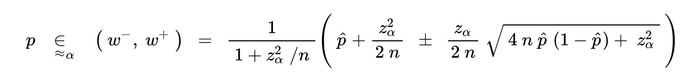

At Ramp, which makes finance software for businesses, I work on a core feature called "receipt matching." Businesses are required by law to attach receipts to most transactions, and since businesses make many transactions, matching up all the receipts to the right transactions can be incredibly time-consuming! With the receipt matching feature, a business can submit any receipt and an algorithm will find the right transaction automatically.
While the receipt matching system works flawlessly for most, some customers may experience persistent matching failures. This is usually due to a configuration issue for the specific customer, which requires manual intervention rather than broad changes to the receipt matching system.
Our goal is to become more proactive at detecting these specific cases. For example, if a customer submits 100 receipts but only 10 of them match, we should be alerted instead of waiting for a complaint. So, when exactly should we be alerted?
A naive approach
Doesn't sound too hard, right? For one customer (a business), we could divide the number of receipts that didn't match by the total number of receipts, and then sort. For example, a business with 4 out of 5 receipts that failed to match would take priority over a business with 2 out of 10 receipts that failed to match.
Except this doesn't work when trying to find the worst experiences out of many businesses. For example, let's say we have
- Business A, who submitted 3 receipts and 2 didn't match
- Business B, who submitted 300 receipts and 180 failed to match
Business A has a worse ratio than Business B, but we definitely care more about Business B. Business A could've just accidentally uploaded the wrong files once, but Business B is almost certainly experiencing a systemic issue.
The problem? We don't adjust the scoring with sample size.
A better approach
I stumbled upon a blog post on how Reddit reworked their comment ranking algorithm, and the problem they're solving seems very similar. They wanted to prevent the situation where a comment with 2 upvotes and 0 downvotes would outrank a comment with 100 upvotes and 2 downvotes (oversimplified from the full explanation).
The algorithm that they decided on was the Wilson score interval, invented in 1927. For the curious, here's the math:
The way this works is that the formula tries to "predict" the final ratio of upvotes vs. downvotes, or in my case, the ratio between matches and non-matches. Another way to think about it is that it balances the ratio with the uncertainty of a small number of observations. Of course, this uncertainty means that you'll have to set a confidence interval (I chose 95%, the reason is left as an exercise to the reader).
Does it work?
I went ahead and implemented this in a Jupyter notebook, calculating a score (bad_match_score) for each business that represents how bad receipt matching is for them:
It worked pretty well! Notice how the businesses with some matched receipts out of thousands of submitted receipts are prioritized over businesses with 0 matched receipts out of only a few hundred.
Side note: don't be alarmed by the high "match not found" rates, I was too lazy to filter out certain irrelevant receipts. The actual rate is much lower, even for outliers.
What's next?
A modified version of this algorithm will be built into an automated system I've started designing. If you'd like to work on such projects with me, Ramp is hiring!